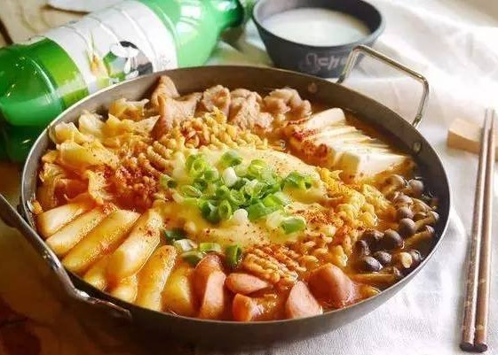

泡麵小歷史

可以相信嗎?大家在吃的泡麵是台灣人發明的!!!!!!!!!!!!!!!!!!
這位有日本名的台灣人叫做安藤百福(台灣名字叫吳百福),也就是日本大阪日清食品公司的會長,創辦了「日清食品」（Nissin）,並推出世界上了最早的量產泡麵──「雞湯拉麵」，自此之後泡麵逐漸行銷到全世界。
但事情並沒有想像中的簡單,其實發明泡麵的是叫做張國文的台灣人, 因為他在大阪留學期間，懷念台灣的雞絲麵,(沒錯就是你吃的鍋燒雞絲麵)，進而產生了製作泡麵的點子，還為了這點子特別申請了專利。日清公司會長安藤先生正巧不過是一個很有生意頭腦的商人，從張國文手中買下了泡麵的專利，然後利用他的商業頭腦專讓泡麵成為全日本家喻戶曉的食品。
*封面照為網路截取